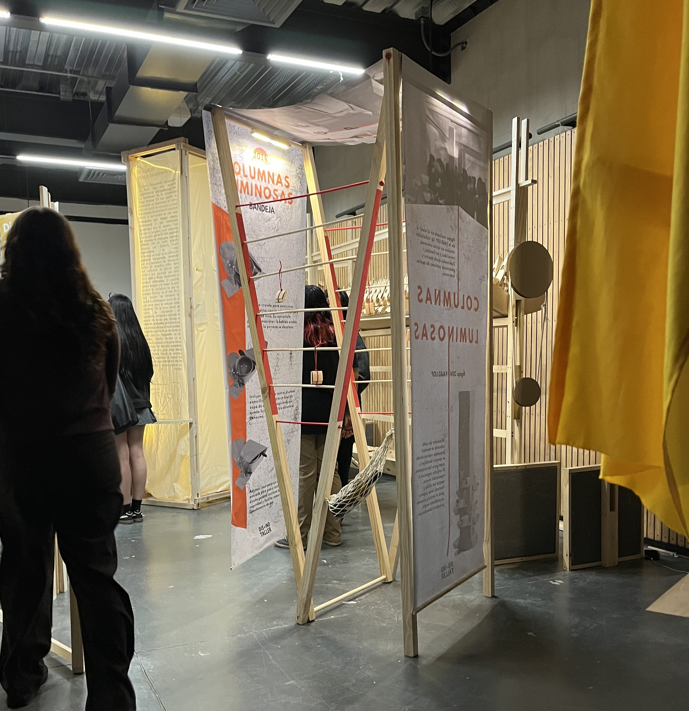
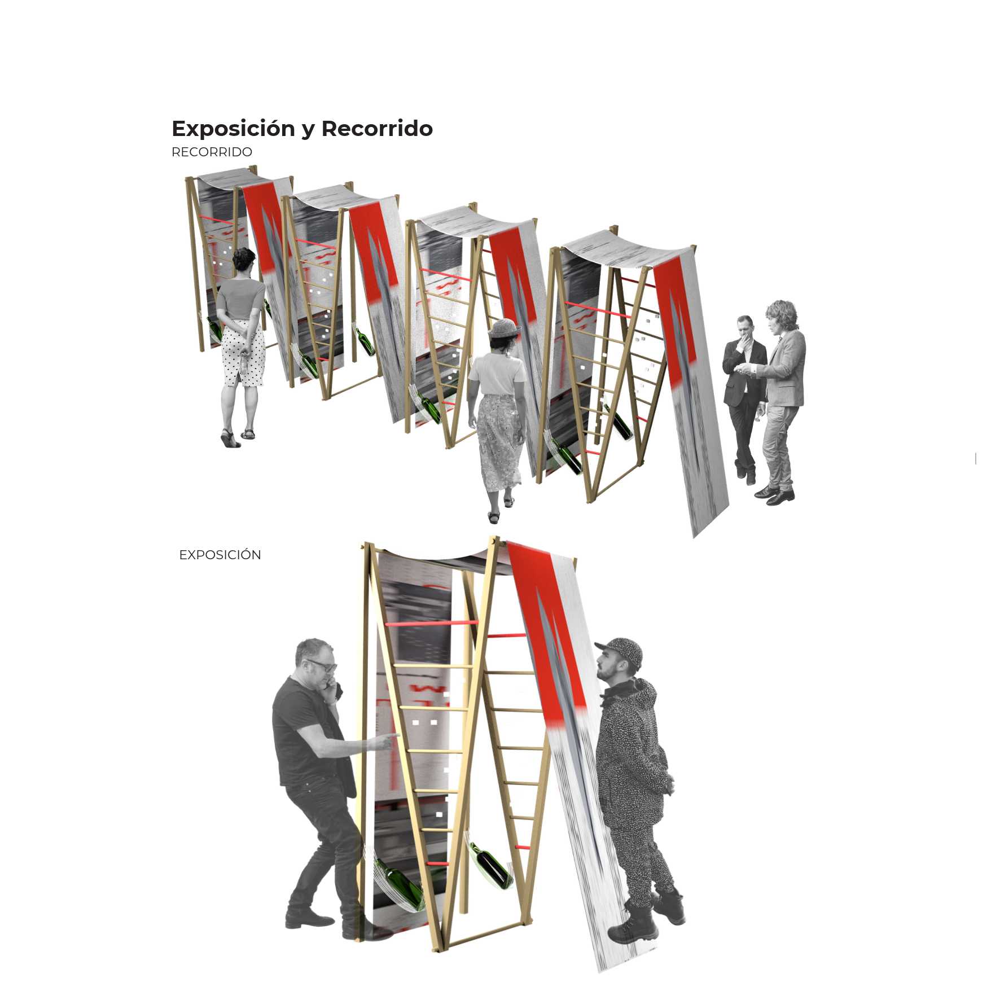
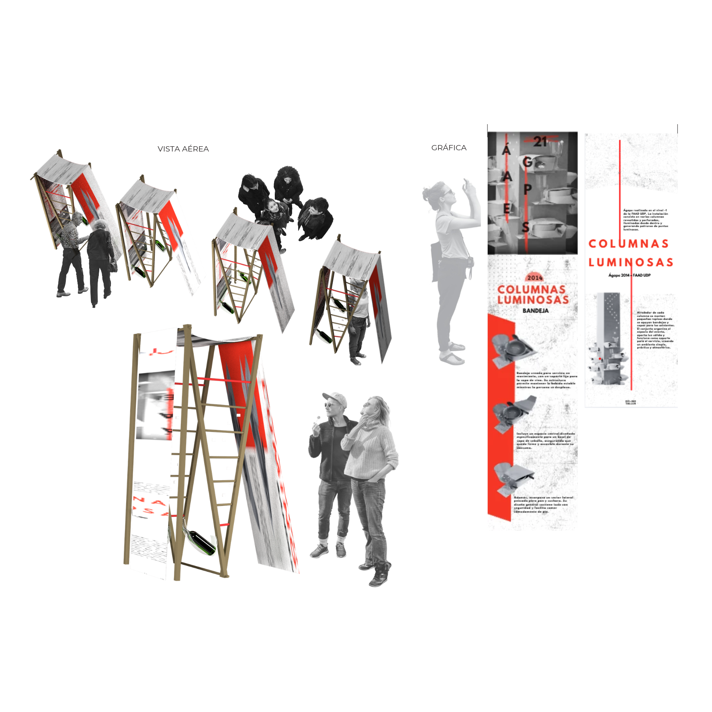

01 / 08
21 Ágapes: Ecos del Encuentro
Ecos del encuentro es una pieza expositiva desarrollada junto a Carla Núñez para 21 Ágapes, una instancia en la que se celebraban 21 ágapes y cada grupo trabajaba uno distinto. A nosotras nos correspondió el ágape número 14, y el proyecto se situó en el Museo de Artes Visuales (MAVI).
La propuesta nace desde la idea del silencio como un espacio fundamental para generar encuentros y momentos de reflexión compartida. El silencio se entiende no como la simple ausencia del sonido, sino como una experiencia viva que invita a las personas a reunirse, a acercarse unas a otras y a crear instancias donde la atención se vuelve más profunda.
El proceso partió con el emplazamiento de la pieza en el museo y su visualización mediante renders, para luego construir la pieza final en listones de madera. Su carácter desmontable, fácil de montar y desmontar, simboliza que el silencio también se construye colectivamente y puede reorganizarse, expandirse o contraerse según las relaciones que se forman en su interior.


